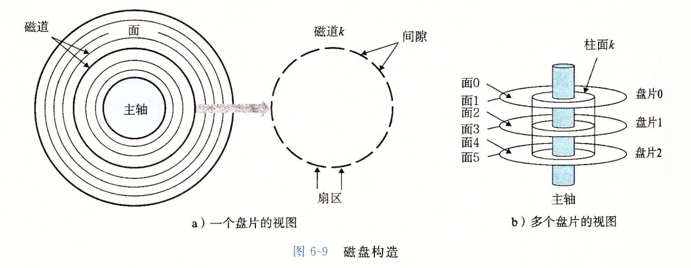
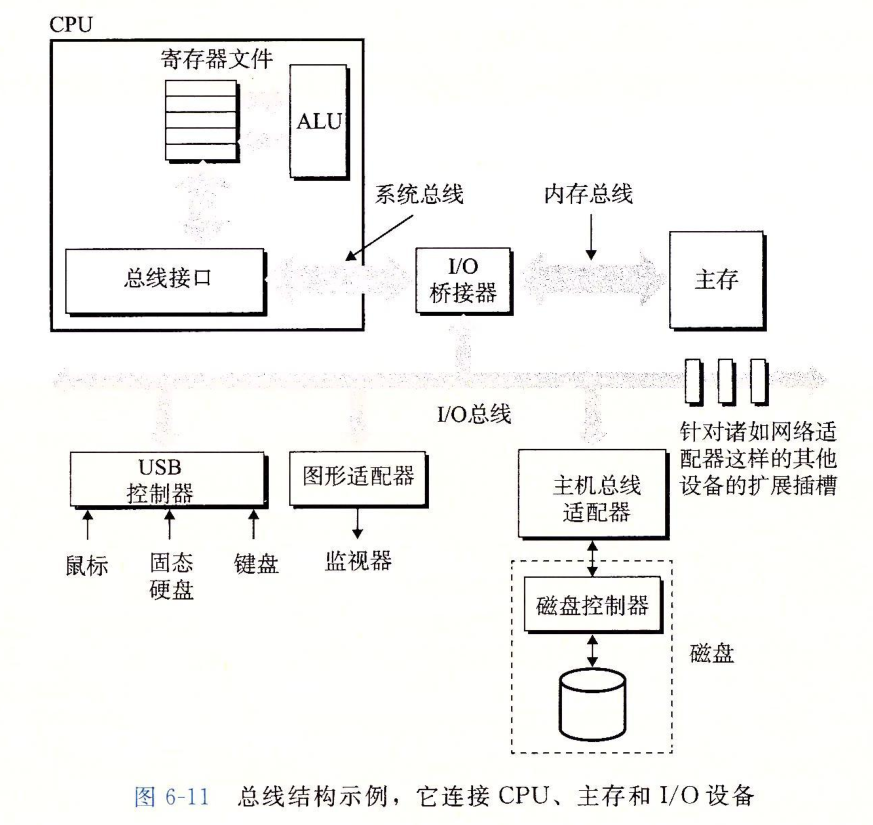
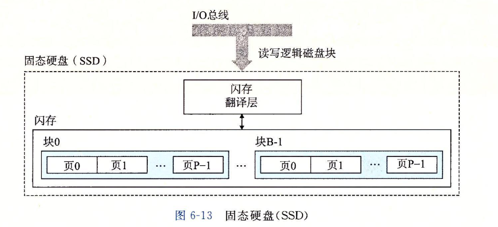

随机访问存储器（RAM）
随机访问存储器分为两类：静态的（SRAM）和动态的（DRAM）。SRAM具有双稳态性，只要有电就会永远保持它的值，即使有干扰（电子噪音）来扰乱电压，当干扰消除时，电路就会恢复到稳定值。DRAM存储器单元对干扰非常敏感，当电容的电压被扰乱之后，它就永远不会恢复了。暴露在光线下会导致电容电压改变，实际上，数码相机和摄像机中的传感器本质上就是DRAM单元的阵列。
磁盘


I/O桥接器主要分为南桥和北桥，北桥连接内存总线南桥连接IO总线
固态硬盘（SSD）
固态硬盘是一种基于山村的存储技术。比起磁盘，SSD由半导体存储器构成，没有移动的部件，因而随机访问时间比旋转磁盘快，但是也更易磨损。

局部性
局部性原理是指倾向于引用邻近于其他最近引用过的数据项的数据项，或者最近引用过的数据项本身。
局部性原理主要是为了解决计算机各个逻辑部件之间的访问速度差异。例如：查询的数据放在
内存和磁盘中访问的速度不一致。
时间局部性
被引用过一次的内存位置很可能在不远的将来再被多次引用。例如：CPU会将从内存中读出的数据缓存一份放入寄存器，这样下次再访问这个数据时就不需要CPU再从内存中取读取（访问寄存器速度比访问内存快很多倍）。在应用系统中我们会将热点数据放入缓存系统（例如：Redis）中，下次访问的时候就不需要再从磁盘中进行读取。
空间局部性
一个内存位置被引用了一次，那么程序很可能在不远的将来引用附件的一个内存位置。例如：CPU从内存中读取数组的第一个元素时，会将整个数组中的元素都放入寄存器中。在应用系统中我们可能在一次查询中将下次查询需要的值同时带出来，下次就避免了再次发送请求，而是从页面中直接获取值